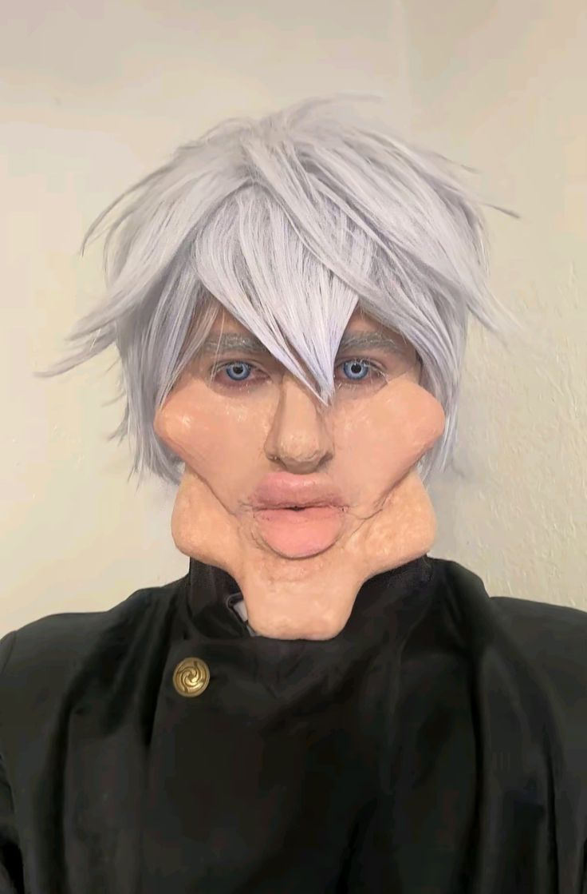

Conheça mais sobre o personagem principal
Satoru Gojo
Satoru Gojo é um personagem fictício da seríe de anime e mangá Jujutsu Kaisen criado por Gege Akutami.
Ele fez sua primeira aparição na animação prequela Jujutsu Kaisen 0 como o mestre de Yuta Okkotsu, um adolescente
amaldiçoado.
Satoru Gojo, de Jujutsu Kaisen, possui poderes excepcionais baseados em sua Técnica Ilimitada e
seus Seis Olhos.
Ele pode manipular o espaço e a energia de maneiras complexas, criando efeitos como
infinito, azul, vermelho e o poderoso Vazio Roxo. Principais poderes:
Principais poderes:
#1 Seis Olhos:
Uma característica ocular única que confere a Gojo percepção aprimorada,
capacidade de processamento
cerebral e controle preciso da Técnica Ilimitada.
#2 Técnica Ilimitada (Mugen):
Uma técnica que lhe permite manipular e distorcer o espaço em nível atômico.
#3 Infinito:
uma técnica "neutra" que cria um infinito entre ele e o atacante, desacelerando ataques até que parem de se
mover, ou pelo menos, pareçam.

#4 Azul:
Uma técnica de atração que cria um centro de gravidade, esmagando tudo o que estiver ao redor.
#5 Vermelho:
Uma técnica de repulsão que inverte as propriedades do Azul, criando uma força poderosa que repele objetos.
#6 Vazio Roxo:
Uma técnica avançada que combina Azul e Vermelho, criando uma massa imaginária que destrói tudo em seu caminho.
#7 Reversão da Técnica Amaldiçoada:
Gõjo pode usar a Reversão da Técnica Amaldiçoada para curar seus ferimentos.
#8 Manipulação da Gravidade, Física e Probabilidade:
O Vazio Azul, por exemplo, é um subproduto da amplificação de números ilimitados e negativos, criando
situações impossíveis como a criação de objetos inexistentes.
#9 Telecinese:
Pode induzir força invisível para esmagar alvos.
#10 Manipulação da Matéria:
Suas habilidades funcionam em nível atômico.
#11 Velocidade e Durabilidade:
Gojo possui velocidade e durabilidade impressionantes, conseguindo acompanhar
movimentos rápidos e suportar
golpes severos, além de se recuperar rapidamente.
Nesse tópico falaremos mais sobre a "Expansão de domínio" de Satoru Gojo,
chamada: Muryōkūsho.
Muryoku Choushou, ou Vazio Roxo, é uma técnica poderosa em Jujutsu Kaisen,
criada pela combinação de duas técnicas amaldiçoadas do infinito: Azul (atração) e Vermelho (repulsão).
Ao combinar esses dois efeitos, Gojo cria uma singularidade que destrói tudo em seu caminho, como um buraco negro.
Em Jujutsu Kaisen, a Expansão de Domínio (領域展開, Ryōiki Tenkai) é uma técnica avançada de feitiçaria jujutsu,
considerada o ápice do poder de um feiticeiro. Ela envolve a criação de um espaço tridimensional, um domínio,
que amplifica a energia amaldiçoada do usuário e garante a eficácia de seus ataques.